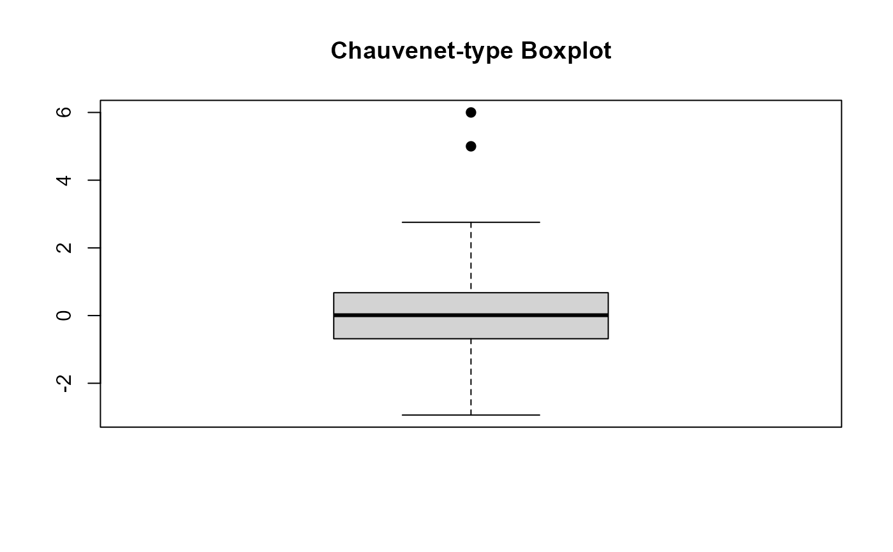
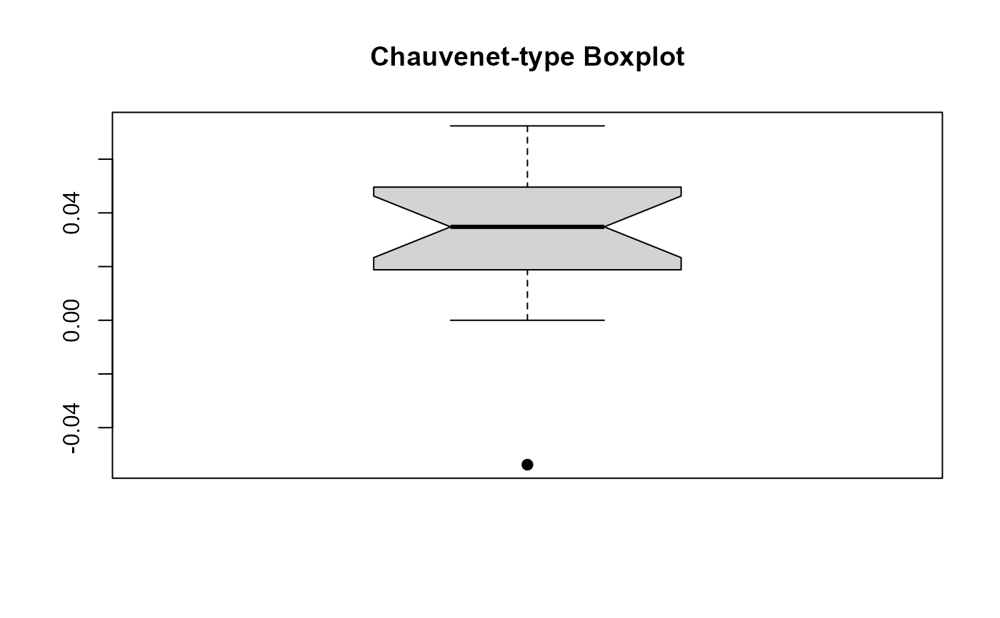

This function can be operated the same way as boxplot() in base R, except that the fence coefficient k=1.5
in Tukey's boxplot is replaced by the fence coefficient associated with Chauvenet’s criterion. For details,
please refer to formula (9) in Lin et al. (2025).
Usage
chau_boxplot(data, group_col = NULL, value_col = NULL, ...)
Arguments
- data
The data frame containing the data.
- group_col
The column name for grouping data.
- value_col
The column name for the values to plot.
- ...
Additional arguments passed to the plotting function.
Value
A Chauvenet-type boxplot in base R.
References
Hongmei Lin, Riquan Zhang and Tiejun Tong (2025). When Tukey meets Chauvenet: a new boxplot criterion for outlier detection. Journal of Computational and Graphical Statistics, accepted.
Examples
# Example 1
chau_boxplot(c(rnorm(1000),5,6))

# Example 2
rate.senior <- c(4.96, 6.30, -5.38, 1.60, 7.24, 5.26, 2.55, 5.96, 3.96,
4.19, 1.88, 4.06, 4.75, 0, 0, 2.5, 2.87, 3.00)/100
chau_boxplot(rate.senior, notch=TRUE)
